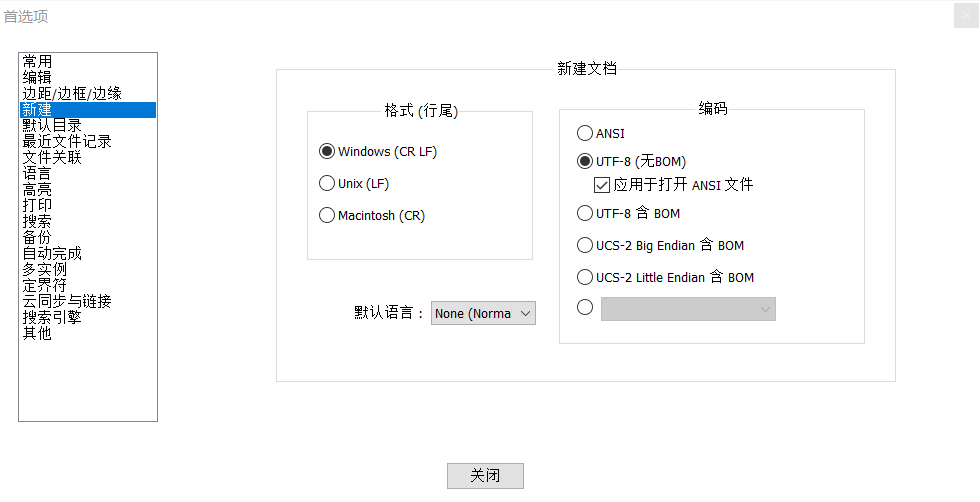
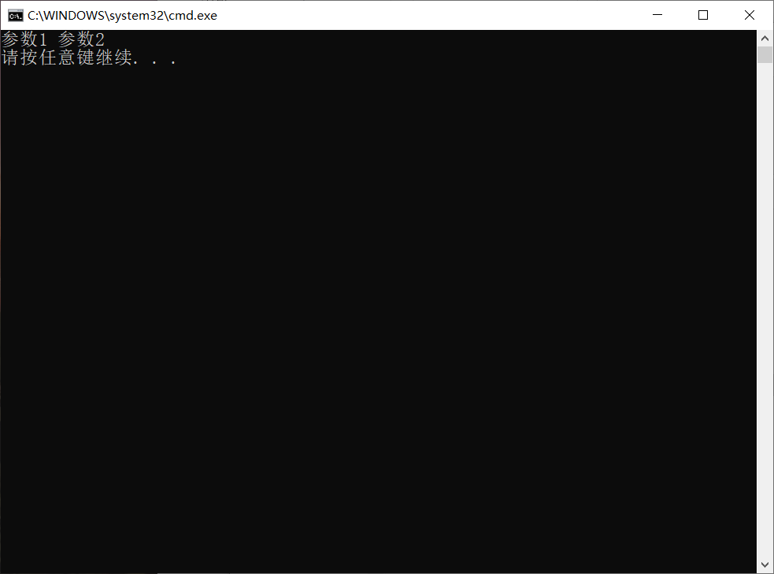
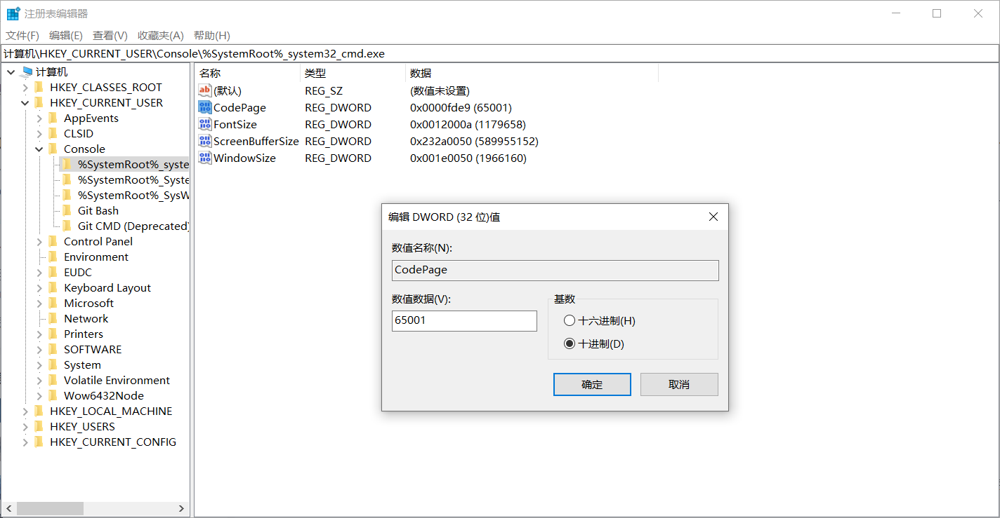

让批处理文件中的中文正常显示
最近在学习DOS命令和批处理相关内容的时候，遇到了点问题，就是在执行包含中文的批处理文件时，中文无法正常显示，在查阅了相关资料之后，了解了一些编码相关的内容。

原因
编码相关的那些事
现在主要的两种编码格式为UTF-8和ANSI。
ANSI是一种字符代码，为使计算机支持更多语言，通常使用 0x00~0x7f 范围的1 个字节来表示 1 个英文字符。超出此范围的使用0x80~0xffff来编码，即扩展的ASCII编码。
为了应对不同国家和地区的使用，ANSI编码存在很多不同的标准：由于汉字的种类非常多，而一个字节（Byte）最多只能表示2^8 = 256种文字与符号，这肯定是远远不够的。因此在中国、日本、韩国等采用象形字符的地区，通常采用双字节字符集的方式来表示文字符号，即采用两个字节来表示一个字符。在简体中文系统下采用的是GBK标准，比如汉字“字”就使用[0xd7,0xd6]两个字节进行存储。系统会根据计算机语言来确定ANSI的标准，当然也可用手动更改。
UTF-8（8位元，Universal Character Set/Unicode Transformation Format）是针对Unicode的一种可变长度字符编码。它可以用来表示Unicode标准中的任何字符，而且其编码中的第一个字节仍与ASCII相容，使得原来处理ASCII字符的软件无须或只进行少部分修改后，便可继续使用。因此，它逐渐成为电子邮件、网页及其他存储或传送文字的应用中，优先采用的编码。
UTF-8相较于ANSI最大的特点就是采用了可变长度的编码方式，相较于ANSI对任何字符都采用固定长度编码，UTF-8可对不同范围内的字符使用不同长度的编码，比如英文中一个字符就用一个字节表示，而汉语则使用三个字节，使得不同的文字都可以以一套通用的标准进行编码，这保证了不同语言的系统中编码的通用性。
产生原因
查看文本编辑器的编码格式，发现采用的是UTF-8的编码格式，但是win10系统控制台的默认编码格式为ANSI编码，与文本编码格式不符合，导致计算机用ANSI的标准去对采用了UTF-8编码的文本进行解释，结果自然就产生了乱码。

解决
解决方法
可以将文本的编码格式改为与控制台编码一致，这里建议都改为ANSI编码，因为UTF-8编码格式下的控制台的提示信息为英文。这里在更改了文件的编码格式为ANSI并重新编辑文本后，中文显示正常。

当然如果你想保证指令的通用性，批处理文件仍要采用UTF-8的编码格式，可以选择更改控制台的编码格式，以下给出了两种将控制台编码格式更改为UTF-8的方法。
方法1：注册表编辑器修改
Step1：打开注册表编辑器
可以直接在Win10搜索框中搜索关键字“注册表”打开，也可以Win+R运行“Regedit”。
Step2：找到相应的数据并更改
找到 HKEY_CURRENT_USER\Console\%SystemRoot%_system32_cmd.exe 并将其更改为65001（十进制）或fde9（十六进制）。

方法2：运行注册表脚本
可以直接将方法1的操作编写为一个脚本操作，代码如下：
1 | Windows Registry Editor Version 5.00 |
复制到新建文本文件并将拓展名改为“.reg”，运行。
 微信
微信 支付宝
支付宝